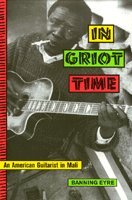

<body bgcolor="#FFFFFF" text="#000000" link="#0000FF" vlink="#CC0000" alink="#CC0000"><center><hr width="350" size="1" align="center" noshade>An American guitarist chronicles the lives of musicians in Mali<hr width="350" size="1" align="center" noshade><p><a href="https://cdcshoppingcart.uchicago.edu/Cart/ChicagoBook.aspx?ISBN=9781566397582&&PRESS=temple" target="_top">Buy this book!</a> | <a href="https://cdcshoppingcart.uchicago.edu/Cart/Cart.aspx?PRESS=temple" target="_top">View Cart</a> | <a href="https://cdcshoppingcart.uchicago.edu/Cart/Cart.aspx?PRESS=temple" target="_top">Check Out</a></p><p></p></center><!--none//--><h1>In Griot Time</h1>
<H2>An American Guitarist in Mali</H2>
<h3>Banning Eyre</h3>
<P>cloth 1-56639-758-8 $85.50, Apr 00, <FONT COLOR=#990033>Available</FONT>
<br>paper 1-56639-759-6 $29.95, Apr 00, <FONT COLOR=#990033>Available</FONT>
<BR> 280 pp
6x9
2&nbsp;map(s) 28&nbsp;halftones
<BR>&nbsp;<br>Restricted: For sale in North America only.
</P><BLOCKQUOTE><I><!-- don't use --></I></BLOCKQUOTE>
<ul><p><I>"Djelimady Toundara has powerful hands. His muscled fingers and palms seem almost brutish to the eye, but when he grasps the neck of a guitar and brushes the nail of his right index finger across the strings, the sound lifts effortlessly, like dust in a wind. In Bamako, Mali, where musicians struggle, Djelimady is a big man, and all of his family's good fortunes flow from those hands."</I></ul>
<P>Djelimady Tounkara is only one of the memorable people you will meet in this dramatic narrative of life among the griot musicians of Mali. Born into families where music and the tradition of griot stroy-telling is a heritage and a privilege, Djelimady and his fellow griots&#151both men and women&#151live their lives at the intersection of ancient traditions and the modern entertainment industry. During the seven months he spent living and studying with Djelimady, Banning Eyre immersed himself in a world that will fascinate you as it did him.
<P>Eyre creates a range of unforgettable portraits. Some of the people who stride through his pages are internationally known, musicians like Salif Keita, Oumou Sangar&#233, and Grammy winner Ali Farka Tour&#233. But the lesser-known characters are equally fascinating: Adama Kouyat&#233, Djelimady's dynamic wife; Moussa Kouyat&#233, the Tounkara family's own griot; Yayi Kanout&#233, the flamboyant jelimuso (female griot) who failed to take America by storm; Foutanga Babani Sissoko, the mysterious millionaire who rebuilt an entire town and whose patronage is much sought after by the griots of Bamako.
<P>But the picture Eyre draws is not just a series of portraits. Out of their interactions comes a perceptive panorama of life in Mali in the late twentieth centruy. The narrative gives us a street-level view of the transformation of musical taste and social customs, the impact of technology, and the pressures of poverty, at a curcial time in Mali's history. In individual after individual, family after family, we see the subtle conflicts of heritage and change. Even the complications of democracy&#151with democracy, mango vendors think they can charge anything they want, Djelimady points out&#151are woven into an unforgettable saga of one man, his family, his profession, and the world of Malian music.
<BR>&nbsp;<h2>Excerpt</h2><P>Excerpt available at <a href="http://www.temple.edu/tempress">www.temple.edu/tempress</a></p>
<BR>&nbsp;<h2>Reviews</h2>
<p><I>"Banning's book presents a riveting, richly illustrative and insightful look into his extraordinary seven month journey deep into the heart of Mali's music scene. To have been accepted both personally and musically is amazing in itself...that he writes about it this well is a revelation. The explosion and popularity and appetite for world music, Banning's book is a one of a kind primer on just how deep the connection runs between West African cultural traditions and nearly all of our Western popular music. I can't remember when a Westerner has been able to dive so deeply into another culture with such soulful results. His adventures inspired me to make my own journey with him to Mali this year...I had to see and hear this extraordinary world for myself."</I>
<br>&#151<b>Bonnie Raitt</b>
<p><i>"Banning Eyre has produced an interesting and moving work which captures the feel and scent of living in an African society the way few travel books ever do. The community of musicians in Bamako comes to life in these pages. Readers who may have heard any of the music which is the book's focus will find Eyre's knowledge and perspective fascinating!"</i>
<br>&#151<b>Bruce Cockburn</b>
<p><i>"Guitarist Banning Eyre, driven by a deep love of Malian guitar and the desire to learn with the masters at the source of the tradition, goes to spend seven months in Mali's capital. There, against the backdrop of some of Africa's most beautiful music, he finds himself in the thick of griot intrigue. An affectionate and gripping account of what makes Mali's most popular musicians tick."</i>
<br>&#151<b>Dr. Lucy Dur&#225n</b>, School of Oriental and African Studies, London University
<p><i>"</I>In Griot Time<I> is an extremely engaging, thoroughly well-written description of the exciting and complex modern musical scene of Bamako, Mali. Thanks to Banning Eyre's seven-months' total immersion in this West African society, his sensitive and colorful insights succeed in capturing the essence of that remarkable vibrant culture for his readers in a way that could only be equaled by personal experience."</i>
<br>&#151<b>David C. Conrad</b>, Professor of African History, State University of New York Oswego
<p><i>"The book is an earnest account of Mr. Eyre's seven-month stay in Bamako, Mali, where he had an apprenticeship with the guitarist Djelimady Tounkara."</i>
<br>&#151<b><i><a href="../reviews/1493_review.html">The New York Times</a></i></b>
<p><i>"Part travelogue, part musical master class, Banning Eyre's account of his musical travels in Mali is required reading for anyone that wants to unravel that country's complex musical tapestry.... Eyre is one of the leading lights of the Afropop worldwide organization."</i>
<br>&#151<b><i>Global Rhythm</i></b>
<p><i>"[M]ost of the book is about what happens to [Eyre] when he’s not playing music—the conversations he has with people, the things he sees and does, the other musicians he hears—all written with a clear eye, an astonishing sensitivity, and a willingness to wrestle with some difficult questions about cultural frictions and the legacy of colonialism.... Eyre’s book is just the thing to make people who don’t know much about African music want to learn more about it."</i>
<br>&#151<b><i>The New Haven Review</i></b>
<BR>&nbsp;<P><p>Visit Banning Eyre's website: <a href="http://banningeyre.com" target="new">http://banningeyre.com</a>.</P><BR>&nbsp;<br>
<h2>Contents</h2><P>
<p>List of Terms
<br>Acknowledgments
<br>Maps
<br>1. Apprentices and Kings
<br>2. The Naming Ceremony
<br>3. Praise for Hire
<br>4. Slaves of Music, Music of Slaves
<br>5. Bamako After Hours
<br>6. Storms
<br>7. Return of the Diva
<br>8. Faith in Shadows
<br>9. Mali's Favorite Son
<br>10. A Woman of Wassoulou
<br>11. Interview with the Millionaire
<br>12. Sacrifices
<br>13. Giving and Taking
<br>Afterword
<br>Glossary of Names
<br>Discography
<br>References
<br>Index
</P><BR>&nbsp;<H2>About the Author(s)</H2>
<table><tr><td valign="top"><img src="/tempress/authors/1493_au.gif" height="90" width="75"></td><td width="100%" valign="middle"><p><B>Banning Eyre</B> writes about international music for the <I>Boston Phoenix</I>. He also comments and reports on music for NPR's <I>All Things Considered</I> and has been published in <I>Billboard</I>, <I>Option</I>, <I>Rhythm Music</I>, <I>The Beat</I>, <I>Guitar Player</I>, and <I>Folk Roots Magazine</I>. He has traveled extensively in Africa and has produced many programs for the public radio series Afropop Worldwide. He is coauthor (with Sean Barlow) of <I>Afropop! An Illustrated Guide to Contemporary African Music</I> (Chartwell, 1995).</P></td></tr></table>
<BR><H2>Subject Categories</H2>
<p><A HREF="/tempress/music.html" TARGET="_top">Music and Dance</a>
<BR><A HREF="/tempress/history.html" TARGET="_top">History</a>
<BR><A HREF="/tempress/african_studies.html" TARGET="_top">African Studies</a>
</p>
<p align="center"><a href="https://cdcshoppingcart.uchicago.edu/Cart/ChicagoBook.aspx?ISBN=9781566397582&&PRESS=temple" target="_top">Buy this book!</a> | <a href="https://cdcshoppingcart.uchicago.edu/Cart/Cart.aspx?PRESS=temple" target="_top">View Cart</a> | <a href="https://cdcshoppingcart.uchicago.edu/Cart/Cart.aspx?PRESS=temple" target="_top">Check Out</a></p><p><font face="Arial" size="1"><a href="copyright.html" onMouseOver="window.status='Web Copyright Policy';return true;" onMouseOut="window.status=''" title="Web Copyright Policy">&copy;</a> 2015 <a href="http://www.temple.edu" target="new" onMouseOver="window.status='Link to Temple University home page';return true;" onMouseOut="window.status=''" title="Link to Temple University home page">Temple University</a>. All Rights Reserved. http://www.temple.edu/tempress/titles/1493_reg.html</font></p>